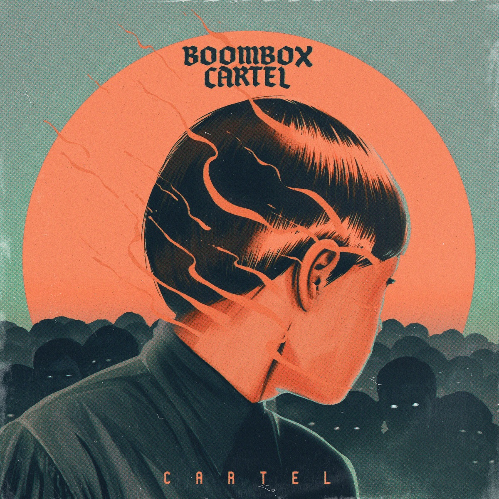
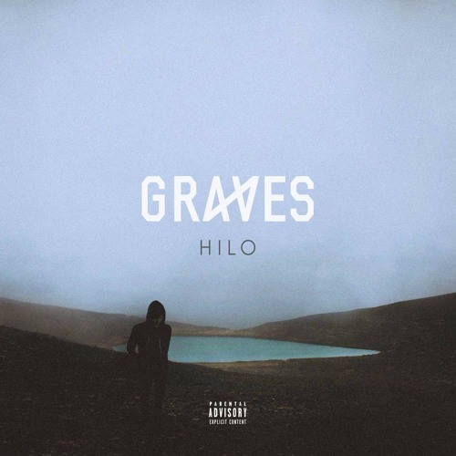
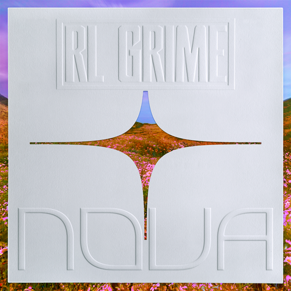
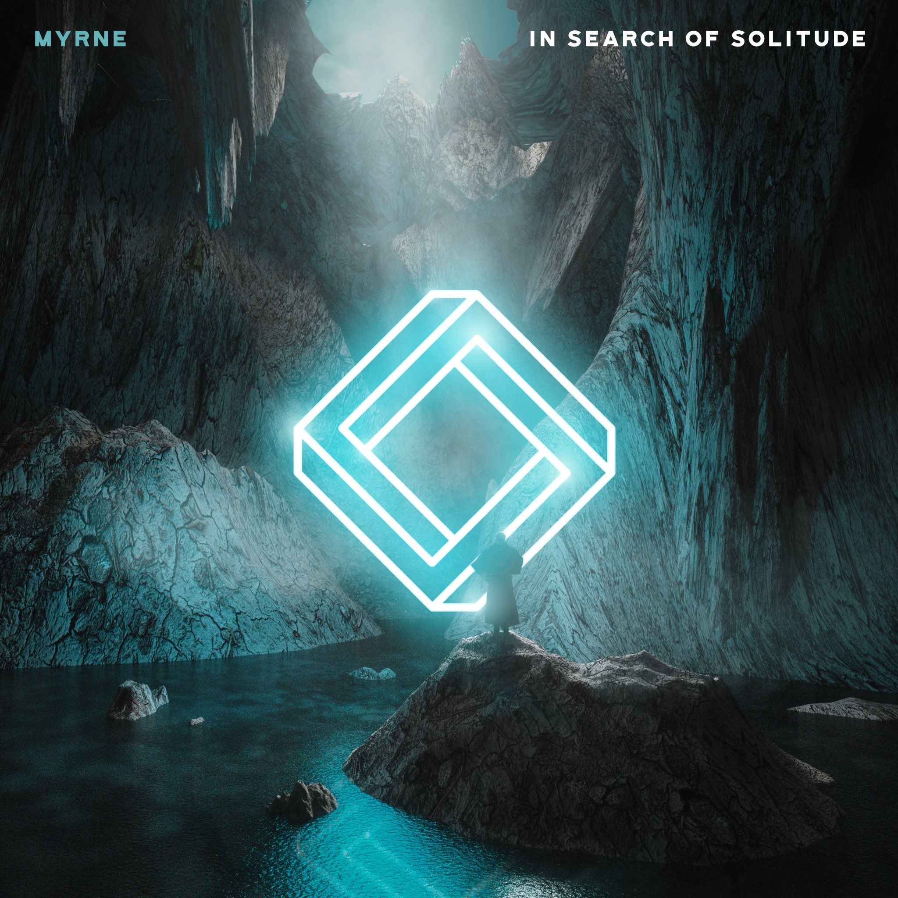
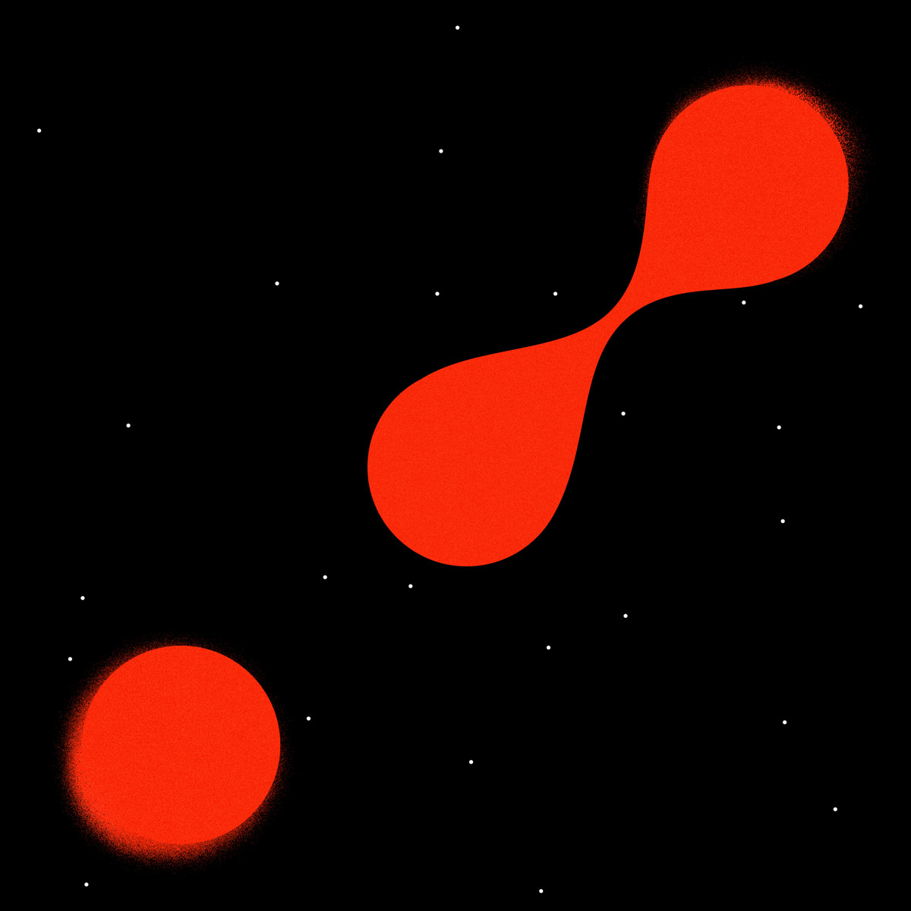

Cartel - Boombox Cartel

What a way to begin.
My favorite Electronic music record of all time, period. You will notice that every one of these records listed on my
wail.to profile are electronic records, and that's because despite me enjoying a fair bit of indie, country, and pop music, I am a very
avid fan of dance & electronic. I produce quite a bit of music in my free time and do a little bit of DJ'ing, thus you can see the influence.
Cartel is Boombox Cartel's -- an electronic music duo from Mexico -- debut EP, and it is critically acclaimed within the subgenre. Roaring
sub-basses, euphoric pads, supersaw synthesizers, trap oriented percussion and whaling drums pound the user from the beginning of introduction track,
Pheonix, until the closing collaboration track with Quix. There is something special about music that you can feel, and this record embodies
that quite literally (I own a subwoofer and have roommates and have played Jefe many times, no further comment necessary.) Released in 2017, this
timeless record still sticks with me and is played out 3 years later.
If you want a hint of massive electronic music, this it.
Hilo - Graves

Another special one to me!
Also an EP of 2017, Graves -- electronic artist out of Hawaii -- came to make a statement. Hilo continued to add to a stockpile of a new
and quickly growing subgenre of electronic music based on future bass and electronic trap. In its 6 tracks, Graves shows his strength in
diversity as the album opens with a roaring euphoric intro, into a high energy rap record feat. bbno$, carrying on through lower tempo rnb
esque tracks and eventually high energy future bass tracks with the aforementioned Boombox Cartel and Hex Cougar.
Hilo would help pave future bass -- a blend of euphoric supersaw synthesizers & trap/rap percussion -- into the mainstream in electronic
dance music as his collaboration, Hilo, grew to millions of streams. The song's growling sub basses and sizzling high end encompasses a listener
with euphoric leads and giant synths that have you caught off guard.
It's a close call between this and Cartel, but Hilo is an absoloute euphoric powerhouse of an EP.
NOVA - RL Grime

NOVA.. oh my. How long us fans waited..
NOVA is the sophomore album of Henry Steinway -- who goes after the moniker RL Grime -- that was released after drastic anticipation from various
delays, rumors, and his credibility within the electronic dance music scene. The album sports a variety similarly seen in Cartel & Hilo: with multiple
rappers, pop vocalists, EDM collaborators, and more appearing on the album. Steinway also worked with both aforementioned artists, Graves & Boombox Cartel
on varying tracks on the LP including Reims, Take It Away, and more.
NOVA had sold out tours spanning the nation prior to its release, which drew some controversy as fans continued to grow anxious as release dates
continued to be delayed. However, the album was released July 2018 to almost universal praise from within the electronic trap music scene. It sports euphoric
power records including a monsterous intro titled Feel Free, a shining future bass record named Shrine (featuring pop singer Freya Ridings), a growling
bass record called Pressure (co-produced with Boys Noize), Light Me Up featuring Miguel, and more. The LP solidified Henry as a headlining artist in
dance music as seen by his non-stop festival bookings for mainstage events.
Worth the wait? For me, absoloutely. The delay and corresponding anticipation for NOVA was huge, but Henry Steinway (RL Grime) found a way to make it payoff..
In Search of Solitude - MYRNE

Can you tell I like euphoric music yet?
MYRNE, also a friend of all aforementioned artists from my Top 5, finally released his debut album In Search of Solitude in 2019.
In Search of Solitude offers the user's ear more of a break from hard percussion and growling basslines, as it's primarily more pop and future bass
focused. More of a feelsy album, MYRNE's LP sports 10 tracks that are mixed and mastered beautifully and carry stunning melodies, vocals, and chords to the
listeners ears as they wander through the record. The album's primary genre, future bass, becomes evident as the user continues to listen to melodic guitars, giant
chord progressions, and large drops supported by vocal chops and pad instruments. MYRNE's exceptional ability to paint emotional pictures for a listener
sonically, and put them in the shoes of the feelings the writer was experiencing at the time, is impressive. From the intro to the last track, listeners can
expect to get lost in a wave of crashing electronic synthesizers, samples, and euphoric ambience.
Yet another euphoric trip, MYRNE's debut album shows he is an electronic artist not to be ignored.
Planet's Mad - Baauer

Last but not least.
Baauer, notorious for early 2010's viral anthem Harlem Shake, is back for more.
Coming off a highly successful debut album -- "Aa" -- Baauer returns with "Planet's Mad", a more experimental dive into a world of bass.. and madness.
Planet's Mad, from the opening track to the closing track, "GROUP", does an excellent job of keeping the user on their toes while maintaining a
steady and almost.. predictably un-predictable (just hear me out..) sonic chaos. You know it's coming again, you're just not sure how, and yet it's done well
every time. In contrast to his debut album full of pop & rap collaborations, Planet's Mad only features one pop-esque collaboration with Bipolar Sunshine,
famous from DJ Snake's Middle. The rest is a sonic onslaught of synthesized basslines, chopped and screwed samples, warped vocals, distorted
percussion, 808's, and more. The only way to describe it is you must listen, but be warned, Baauer's sophomore LP is extraterrestrial themed for a reason.
It may be a brand new album, but we love Planet's Mad.
"What did I just listen to?" We're not sure either, but it was cool..